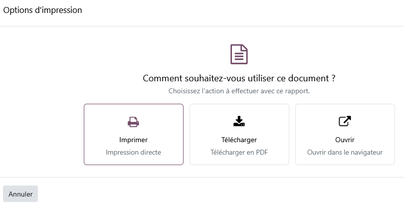

Script Global Report
One simple window to choose what to do with any Odoo report:
print it, download it as a PDF or open it in your browser.
Odoo 19.0 · Works with every report · LGPL-3

What it does
Print
Send the report straight to your printer from a print preview window.
Download as PDF
Save the report as a PDF file in one click, ready to send or archive.
Open in the browser
Check the report in a new tab before printing or downloading it.
Why you will like it
- Global: it applies to all the PDF and HTML reports of Odoo, with nothing to configure per report.
- Uniform: the same window and the same three choices everywhere in the application.
- Light: it only depends on the standard web module and adds no database table.
- Translated: English and French.
Getting started
- Install Script Global Report.
- Open any record with a Print menu (an invoice, a sales order, a delivery slip...).
- Choose a report: the options window opens.
- Pick Print, Download or Open.
Version française
Une fenêtre simple pour choisir quoi faire de n'importe quel rapport Odoo :
l'imprimer, le télécharger en PDF ou l'ouvrir dans le navigateur.
- Imprimer : impression directe du rapport.
- Télécharger : enregistrement du rapport en PDF en un clic.
- Ouvrir : affichage du rapport dans le navigateur avant impression ou téléchargement.
- Global : s'applique à tous les rapports PDF et HTML d'Odoo, sans configuration.
- Disponible en français et en anglais.